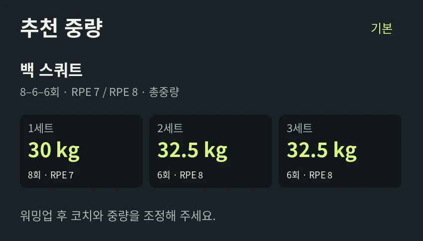

그래서 코치 한 명이 최대 여섯 명과 운동합니다.
같은 동작을 하는 동안에도 코치는 한 사람씩 움직임을 봅니다. 스쿼트 깊이가 들쭉날쭉하다면 발 간격을 함께 조정하고, 바로 다음 세트에서 다시 확인해요. 함께하는 재미도, 내 운동에 집중할 여유도 생깁니다.

여럿이 운동하는 재미는 좋은데, 스쿼트를 제대로 했는지 물어볼 틈 없이 다음 동작으로 넘어간 적 있나요? 꾸준히 땀은 흘려도 지난달보다 무엇이 늘었는지 모르면 운동이 제자리처럼 느껴집니다.
같은 동작을 하는 동안에도 코치는 한 사람씩 움직임을 봅니다. 스쿼트 깊이가 들쭉날쭉하다면 발 간격을 함께 조정하고, 바로 다음 세트에서 다시 확인해요. 함께하는 재미도, 내 운동에 집중할 여유도 생깁니다.
놀토짐은 훈련량과 강도, 회복 시점을 미리 나누는 ‘주기화 훈련’을 활용합니다. 정규 12주 블록에서는 한 동작을 여러 주에 걸쳐 익히고, 마지막에는 유산소와 근력을 각각 확인해요.
스쿼트는 자세가 흐트러지기 전까지 몇 회를 들 수 있는지, 로잉은 마지막까지 유지할 수 있는 속도가 얼마인지 코치와 확인해요.
근력은 여유 있는 무게로 반복해 첫 회와 마지막 회의 자세를 맞춰요. 유산소는 구간마다 속도 차이를 줄이며 일정하게 움직이는 시간을 늘려요.
마지막 세트까지 안정적이었다면 다음 수업에서 중량을 올려요. 인터벌에서는 빠른 구간과 쉬는 구간을 나눠, 다음 구간에도 같은 출력을 낼 수 있는지 살펴요.
익숙한 동작을 유지하면서 세트 수와 전체 운동량을 줄여요. 무게가 올라갈 때 놓쳤던 스쿼트 깊이와 로잉 리듬을 다시 맞춥니다.
근력은 목표 반복 횟수에 맞는 무게로 연습해요. 유산소는 목표 구간을 나눠 첫 구간에서 힘을 얼마나 쓰고 마지막에 얼마나 남길지 익힙니다.
11주는 정해진 거리의 완주 시간이나 구간별 출력을 확인해요. 12주는 정해진 횟수로 들 수 있는 무게를 확인합니다. 같은 조건의 이전 기록이 있다면 비교하고, 다음 블록의 출발점을 잡아요.
주요 근력 동작은 지난 중량과 반복 기록을 바탕으로 시작 무게를 추천해요. 처음이라면 코치와 가볍게 한 세트 해보며 기준을 잡습니다. 추천 무게로 시작한 날에도 코치가 자세와 남은 힘을 보고 다음 세트의 무게를 함께 정해요.

근력 훈련을 위한 바벨과 덤벨, 유산소 훈련을 위한 로잉머신과 바이크가 한 공간에 있어요. 수업 목표에 따라 코치와 함께 무게를 다루는 법도, 숨이 찰 때 속도를 조절하는 법도 배웁니다.
원하는 시간을 누르면 그 일정으로 1주 체험을 신청할 수 있어요.
수업 시간을 불러오는 중입니다.
1주 체험 39,000원 · 첫 방문 시 현장 결제